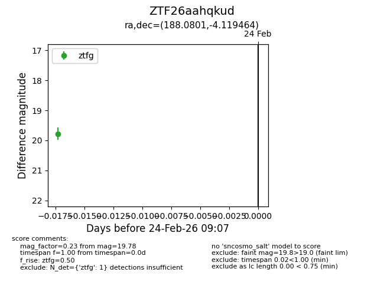
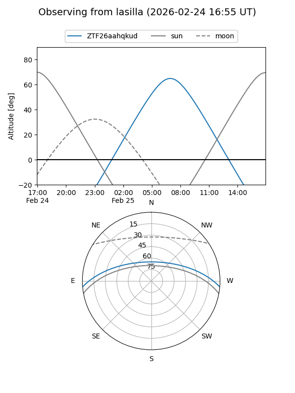
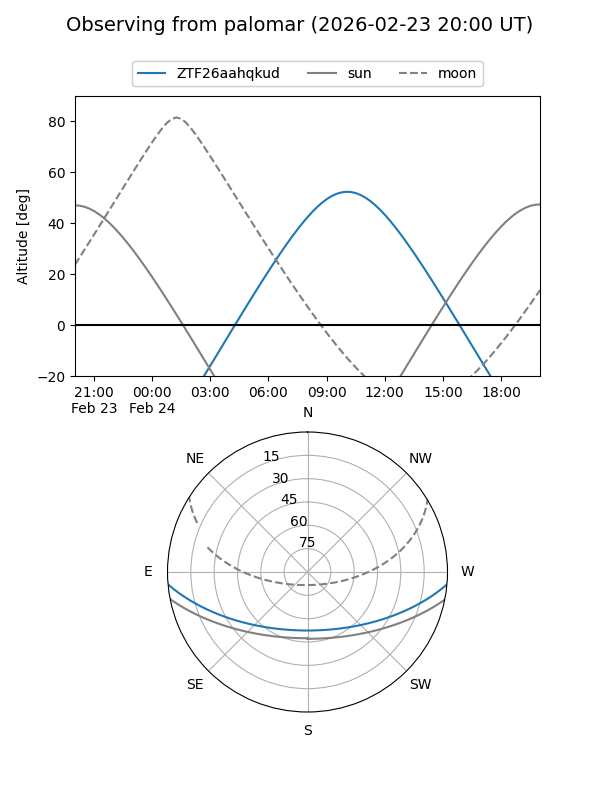

ZTF26aahqkud
Target ZTF26aahqkud at 2026-02-24 09:08
Aliases and brokers:
FINK: link
Lasair: link
ALeRCE: link
alt names
ZTF26aahqkud (ztf,fink_ztf)
Coordinates:
equatorial (ra, dec) = 188.0801,-4.11946
equatorial (HMS+DMS) = 12:32:19.22,-04:07:10.07
galactic (l, b) = (293.8029,+58.41302)
Flags:
Photometry:
last ztfg=19.78
1 ztfg detections
Lightcurve

Visibility


Additional plots